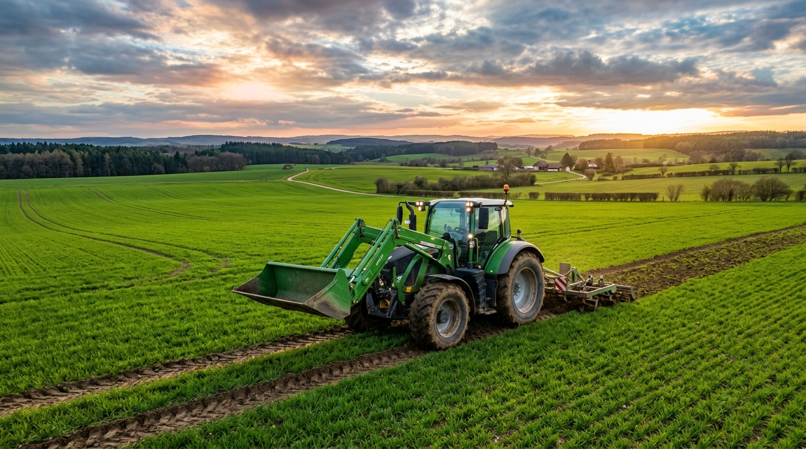
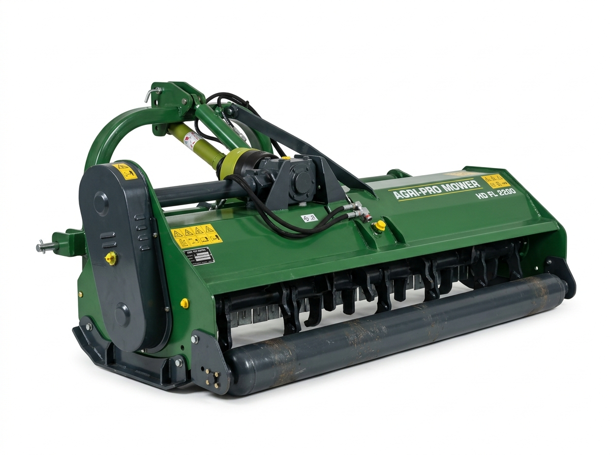
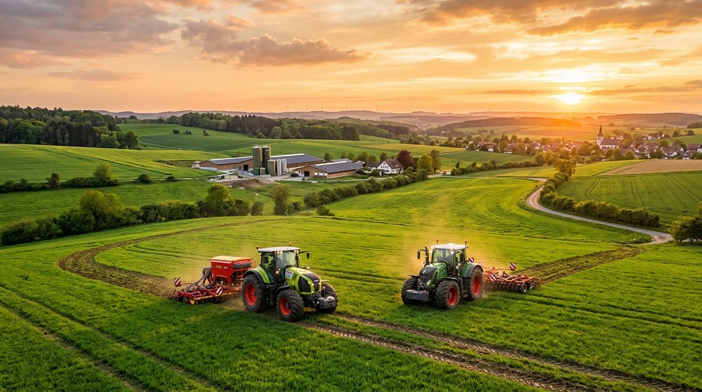

5 Essential Spring Soil Preparation Rules for Heavy Clay
How to prevent soil smear, configure proper rotary tiller rotor speed, and achieve fine seedbed friability while conserving tractor fuel.
Practical equipment maintenance advice, field performance reports, and the latest releases from our European engineering facilities.

How to prevent soil smear, configure proper rotary tiller rotor speed, and achieve fine seedbed friability while conserving tractor fuel.

An engineering comparison between heavy drop-forged hammers for woody brush and reversible Y-blades for high-speed pasture topping.

New 8,000 m² distribution facility guarantees 48-hour delivery of machines, attachments, and original spare parts across the EU.